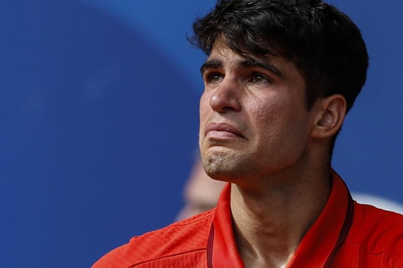

今年法网刚在罗兰加洛斯中央球场举起金杯，西班牙「小蛮牛」阿尔卡拉斯（Carlos Alcaraz）巴黎奥运再打进男单金牌战，登顶结果却无法拷贝，他在2小时50分钟激战以6：7（3：7）、6：7（2：7）败给37岁的塞尔维亚名将约克维奇（Novak Djokovic），奥运初体验以银牌作收。
今年已摘下法网和温布顿冠军，阿尔卡拉斯不讳言，上场目标就是夺胜，「但拿到银牌，我必须非常骄傲。我正在创建一个非常棒的生涯，我希望能持续下去。」
「老实说，我很骄傲站在这样的位置，很骄傲为西班牙带回奖牌。我很确定我的时刻会到来，有一天我会把金牌带回西班牙，所以我会继续等待这一刻，为这一刻持续努力，但现在我要先享受这面银牌，这也是很不可思议的成绩。」阿尔卡拉斯说。
21岁的阿尔卡拉斯是网坛近年新星，21岁就已打下4座大满贯，被看好是接班「三巨头」的新生代好手。初次参加奥运他也以第2种子之姿一路杀进金牌战，首盘还逼出小约8个破发点，但都没能把握破发机会，让37岁的塞尔维亚名将完成生涯「金满贯」。
两盘都是打到「抢7」落败，阿尔卡拉斯坦言，如此输球方式很难受，「我有过机会，是我没掌握。约克维奇打得很好，确实稳住自己位置，再艰难时刻又提升水准，打出不可思议的内容。」他坦言对输球结果非常失望，但也能昂首离场，「我为西班牙付出所有，尽我所能，所以我能以自己表现为荣。」
巴黎奥运热话题麟洋配赛后大合照 李洋「1句话」逗笑马来西亚选手与约克维奇打到抢7落败 阿尔卡拉斯：我有过机会30岁生日礼物 中国刘洋夺金 想吃三鲜馅饺子金牌内战成饭圈大战？孙颖莎满场欢呼 陈梦收获嘘声4日赛程 网球男单王者诞生、樊振东力拚桌球男单金牌

阿尔卡拉斯夺下奥运男子网球银牌。（欧新社）
今年法网刚在罗兰加洛斯中央球场举起金杯，西班牙「小蛮牛」阿尔卡拉斯（Carlos Alcaraz）巴黎奥运再打进男单金牌战，登顶结果却无法拷贝，他在2小时50分钟激战以6：7（3：7）、6：7（2：7）败给37岁的塞尔维亚名将约克维奇（Novak Djokovic），奥运初体验以银牌作收。
今年已摘下法网和温布顿冠军，阿尔卡拉斯不讳言，上场目标就是夺胜，「但拿到银牌，我必须非常骄傲。我正在创建一个非常棒的生涯，我希望能持续下去。」
「老实说，我很骄傲站在这样的位置，很骄傲为西班牙带回奖牌。我很确定我的时刻会到来，有一天我会把金牌带回西班牙，所以我会继续等待这一刻，为这一刻持续努力，但现在我要先享受这面银牌，这也是很不可思议的成绩。」阿尔卡拉斯说。
21岁的阿尔卡拉斯是网坛近年新星，21岁就已打下4座大满贯，被看好是接班「三巨头」的新生代好手。初次参加奥运他也以第2种子之姿一路杀进金牌战，首盘还逼出小约8个破发点，但都没能把握破发机会，让37岁的塞尔维亚名将完成生涯「金满贯」。
两盘都是打到「抢7」落败，阿尔卡拉斯坦言，如此输球方式很难受，「我有过机会，是我没掌握。约克维奇打得很好，确实稳住自己位置，再艰难时刻又提升水准，打出不可思议的内容。」他坦言对输球结果非常失望，但也能昂首离场，「我为西班牙付出所有，尽我所能，所以我能以自己表现为荣。」
巴黎奥运热话题
- 麟洋配赛后大合照 李洋「1句话」逗笑马来西亚选手
- 与约克维奇打到抢7落败 阿尔卡拉斯：我有过机会
- 30岁生日礼物 中国刘洋夺金 想吃三鲜馅饺子
- 金牌内战成饭圈大战？孙颖莎满场欢呼 陈梦收获嘘声
- 4日赛程 网球男单王者诞生、樊振东力拚桌球男单金牌